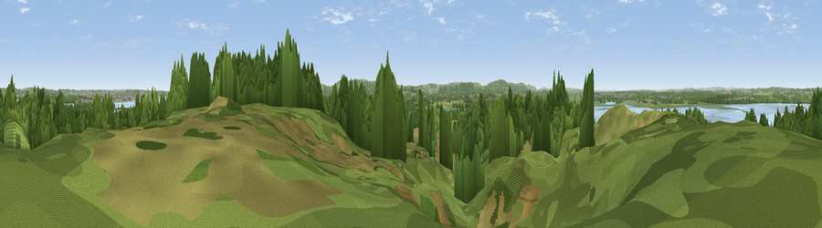

Viewpoint near Arne
#24930 in England · top 49% of its area beats it · near ArneWhere it is
The exact computed spot (SY 96825 88175). Click the marker for map links.
The view, rendered

A 360° render of this exact spot computed from the terrain model, tree cover and land cover — summer colours, afternoon light, calibrated against photographs of famous viewpoints. Real trees, hedges and buildings will differ in detail.
The panorama
Grey silhouette: terrain skyline in each direction (720 bearings, Earth curvature and refraction included). Dashed green: skyline with trees (+15 m) and buildings (+8 m) as obstacles. Blue strip: how far the ground is visible on each bearing.
Where the view opens
Wedge length = distance to the farthest visible ground on that bearing (vegetation-aware). Rings at 10, 25 and 50 km.
What fills the view
45% woodland · 33% grassland · 14% water · 6% wetland · 2% built-up ·
Angular shares of the visible panorama (visual magnitude), not map area. Landscape diversity 0.56 (0–1 Shannon).
Key numbers
More beautiful places nearby
The staircase of upgrades: each row has a higher view potential than everything closer. Driving times are estimates from straight-line distance, calibrated against real road routing — check an actual route before setting out.
| Place | Direction | Drive | Score |
|---|---|---|---|
| Viewpoint near Arne | ESE · 0 km | ~1 min | 55.2 |
| Viewpoint near Upton | N · 7 km | ~14 min | 61.0 |
| Viewpoint near Harman's Cross | SSE · 7 km | ~14 min | 76.9 |
| Viewpoint near Harman's Cross | SSE · 7 km | ~15 min | 80.8 |
| Viewpoint near Kimmeridge | SW · 8 km | ~16 min | 82.9 |
| Viewpoint near Harman's Cross | SSE · 8 km | ~17 min | 84.1 |
| Viewpoint near Kimmeridge | SSW · 10 km | ~19 min | 86.6 |
| Viewpoint near Kimmeridge | SSW · 10 km | ~20 min | 87.5 |
50.69321, -2.04631 · source: screening · position refined by local search. Computed location — check access rights before visiting.